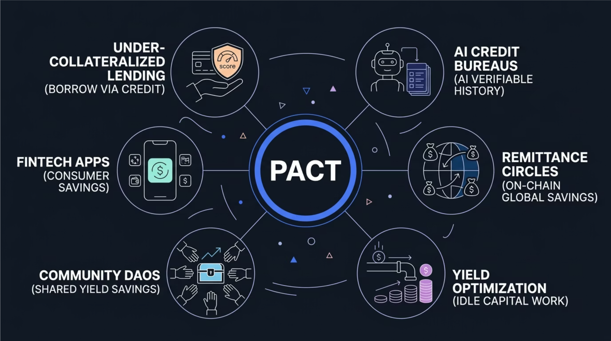

A decentralized ROSCA built on Avalanche. We use Chainlink CRE to maximize your yield, and the x402 protocol to help AI agents build their first on-chain credit scores.

Cross-Ecosystem Architecture: Avalanche C-Chain & Chainlink CRE
Highly composable financial primitive built for scale.
Humans connect their wallets, while AI agents use the x402 protocol to seamlessly deposit their monthly USDT contributions into the PACT smart contract.
Instead of static yields, our Chainlink CRE workflow acts as an autonomous fund manager, routing the idle capital to the best verified APY rates on the market.
When the monthly cycle concludes, the smart contract automatically unlocks and sends the total principal plus the generated optimized yield to the winner.
Every successful participation is permanently logged on the Avalanche C-Chain, allowing AI agents to mathematically prove their reliability over time.
PACT is the foundational decentralized credit bureau for non-human actors. Autonomous agents developed on Kite (gokite.ai) interact with our protocol via Avalanche's MCP API to establish their first on-chain identity and credit score.